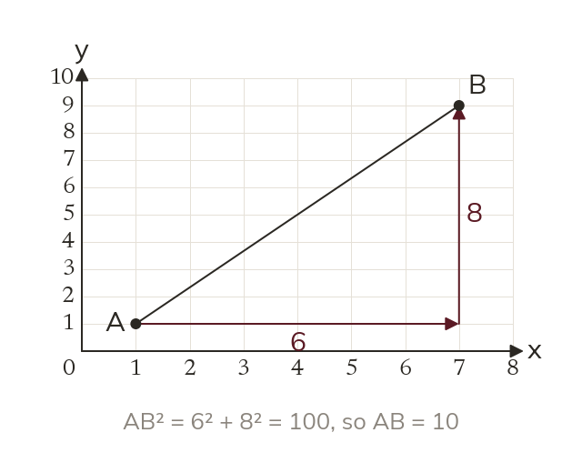
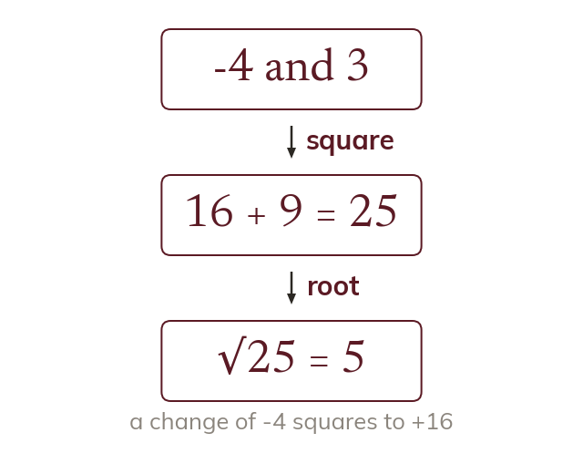
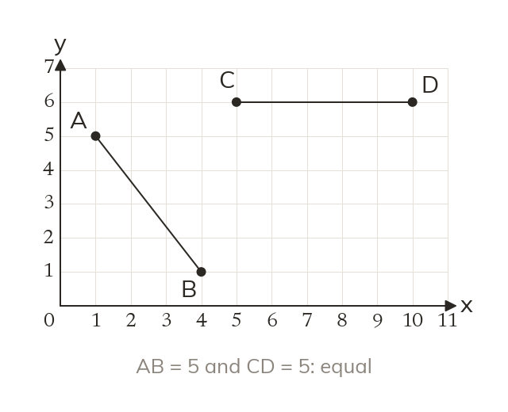
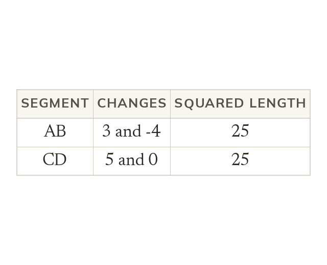

The segment is a hypotenuse
A line segment on a grid is the hypotenuse of a right-angled triangle. Its shorter sides are the change across and the change up between its ends.
A drone flying straight between two points on a map travels further than its moves across and up added together. Pythagoras gives the true straight-line distance.
Work down the page at your own pace. Write every answer in your book first, then click to check it.
Read each card, then follow the worked examples one step at a time.

A line segment on a grid is the hypotenuse of a right-angled triangle. Its shorter sides are the change across and the change up between its ends.

Subtract the coordinates to find each change; a negative change squares to a positive number. Then square both changes, add, and take the square root.
Pick an answer. If it's wrong, the feedback tells you which mistake it was.
Read each card, then follow the worked examples one step at a time.

Two segments can look different yet be the same length. Calculate both before deciding.

Compare the squared lengths before taking any root. Rounding first can make equal lengths look different, or different ones look equal.
Pick an answer. If it's wrong, the feedback tells you which mistake it was.
Finished? Next lesson: 10.15.3 Rearranging, Sketching and Checking Lines.
Log in, then search for a code to practise that skill.